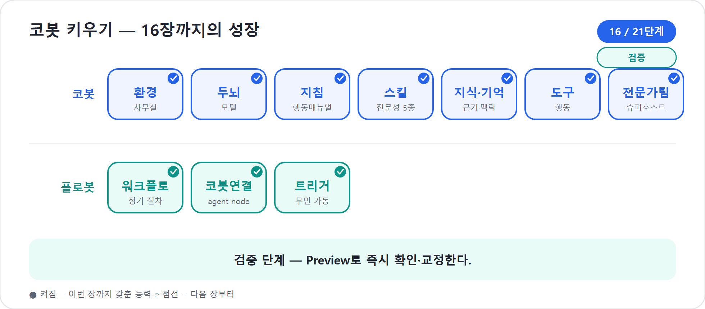

16장. Preview — 만들며 바로 확인하기
15장에서 우리는 플로봇을 깨우는 트리거까지 다뤘다. 이제 코봇과 플로봇은 말로 부르면 움직이고, 일정이나 이벤트가 오면 스스로 일을 시작할 수 있다. 그런데 여기서 바로 게시 버튼을 누르면 안 된다. 신입사원에게 업무 매뉴얼과 자동화 설비를 쥐여준 뒤, 첫 고객 앞에 세우기 전에 반드시 리허설을 시켜야 한다. 그 리허설 무대가 Preview다.
지침을 한 줄 고쳤다. 그 한 줄이 코봇을 정말로 바꿨을까. Skill의
description을 다듬었다. 이제 project-planner가 제때 불릴까.
도구를 붙였다. 코봇이 정말 그 도구를 호출할까, 아니면 말로만
“처리했습니다”라고 할까. Microsoft Learn의 새 에이전트 경험 개요는 빌드
표면을 Build · Preview · Evaluate · Monitor 네 탭으로
설명하며, Preview를 “대화형 미리보기 채팅에서 에이전트를 테스트하는
곳”으로 둔다. 이 장에서는 그 Preview를 손에 익힌다. 완성 후 검사하는
곳이 아니라, 만들며 바로 확인하는 작업대로 쓰는
법이다.
2026년 기준 주의
이 장은 Copilot Studio의 새 에이전트 경험, 곧 에이전틱 AI 미리보기/초기 출시 화면을 기준으로 한다. 클래식의 Test bot 패널, 토픽 추적, 노드 캔버스는 옛 방식으로만 언급한다. 새 경험의 기본 빌드 표면은 Build·Preview·Evaluate·Monitor 네 탭이다. 세부 UI 문구는 업데이트될 수 있다.
만들기와 확인이 한 화면에서 맞물린다
Preview의 핵심은 위치에 있다. Build에서 지침, 지식, Skill, 도구, 모델, 연결된 에이전트를 손본 뒤 곧바로 Preview로 넘어가 말을 걸 수 있다. 예전처럼 “다 만들고, 게시하고, 다른 채널에서 열고, 다시 돌아와 수정”하는 긴 왕복이 아니다. 작은 변경 → 즉시 Preview → 관찰 → 다시 수정의 짧은 루프다.
이 짧은 루프는 신입 교육과 닮았다. “회의록은 세 줄 요약부터 쓰세요”라고 가르쳤다면 바로 회의록 하나를 맡겨 본다. “예산은 원화 기준으로 표기하세요”라고 가르쳤다면 바로 예산표를 시켜 본다. 말로만 교육하면 안다. 일을 시켜 봐야 익는다. Preview는 코봇에게 일을 시켜 보는 작은 사무실이다.
작업 순서는 단순하게 잡는다.
- Build에서 한 가지를 고친다. 지침 한 단락, Skill description 하나, 도구 설명 하나처럼 작게 잡는다.
- Preview에서 그 변경을 겨냥한 질문을 던진다.
- 코봇의 최종 답변뿐 아니라 Skill 호출, 도구 사용, 되묻기, 범위 밖 처리까지 본다.
- 어긋난 지점을 다시 Build에서 고친다.
- 같은 질문을 다시 던져 바뀌었는지 확인한다.
한 번에 모든 것을 고치려 하면 실패 원인이 흐려진다. 지침도 바꾸고 Skill도 바꾸고 도구도 붙인 뒤 Preview에서 틀리면, 무엇 때문에 틀렸는지 알기 어렵다. 반대로 한 번에 하나씩 고치면 원인이 보인다. 입문자에게는 이 방식이 가장 빠르다. 느려 보이지만 실제로는 가장 싸게 실패하는 길이다.
팁
Preview에서 테스트할 때는 같은 질문을 두세 번 반복해 보라. 코봇은 추론하는 동료라 답의 표현이 조금씩 달라질 수 있다. 표현이 달라지는 것은 자연스럽다. 그러나 호출해야 할 Skill을 빼먹거나, 범위 밖 질문에 답을 지어내거나, 도구를 써야 할 곳에서 말로만 처리한다면 설계 문제다.
코봇 한마디
"저는 한 번에 크게 고치면 어디서 좋아졌는지 헷갈려요. 작은 변경을 바로 리허설해 주시면, 제가 어떤 피드백을 배워야 하는지 훨씬 빨리 알아차립니다!"
개발자 뷰와 최종 사용자 뷰
Preview에는 두 개의 눈이 필요하다. 하나는 만드는 사람의 눈, 다른 하나는 실제 사용자의 눈이다. 공개 데모에서 새 Preview는 내부 추론과 도구 사용을 보여주는 개발자 관점과, 최종 사용자에게 보일 답변만 확인하는 관점을 나누어 설명했다. 이 책에서는 편의상 개발자 뷰(내부 과정을 보는 화면)와 최종 사용자 뷰(사용자에게 보일 화면)라고 부르겠다.
| 관점 | 무엇을 보는가 | 언제 쓰는가 |
|---|---|---|
| 개발자 뷰 | 추론 과정, Skill 탐색, tool calls, 참고한 지식, 중간 활동 | 설계·디버깅·원인 분석 |
| 최종 사용자 뷰 | 사용자가 실제로 보게 될 답변과 파일·카드·링크 | 말투·길이·첫인상·게시 전 리허설 |
개발자 뷰는 엑스레이와 같다. 코봇이 어떤 Skill을 찾았는지, 어떤 도구를 불렀는지, 어느 지점에서 머뭇거렸는지를 보여준다. “왜 저 답이 나왔지?”를 물을 때 필요하다. 17장에서 이 머릿속 읽기를 더 깊게 다룬다.
최종 사용자 뷰는 무대 리허설이다. 관객에게 무대 뒤 조명 장치와 대본 메모를 보여주지 않듯, 사용자는 코봇의 추론 로그를 볼 필요가 없다. 사용자가 보는 것은 답변, 요청한 산출물, 필요한 후속 질문뿐이다. 그래서 최종 사용자 뷰에서는 이런 것을 본다.
- 답변이 너무 길지 않은가.
- 첫 문장이 사용자의 일을 바로 받아 주는가.
- 내부 용어, 파일명, 도구 이름을 불필요하게 노출하지 않는가.
- 사용자가 다음에 무엇을 하면 되는지 분명한가.
- 실패했을 때 사과와 대안이 자연스러운가.
예를 들어 코봇에게 “6월 서울 워크숍 일정표 만들어줘”라고 했을 때,
개발자 뷰에서는 schedule-designer와 관련 지식, 필요 도구
호출을 본다. 최종 사용자 뷰에서는 “일정표를 만들었습니다. 다음 항목을
확인해 주세요”라는 답변과 다운로드 파일이 자연스럽게 보이는지 본다. 두
뷰 중 하나만 보면 반쪽 검사다.
Preview에서 반드시 볼 네 가지
Preview에서 “그럴듯한 답인가”만 보면 부족하다. 코봇은 말 잘하는 동료가 아니라 일을 맡길 동료다. 그래서 네 가지를 본다.
| 점검 지점 | 좋은 신호 | 나쁜 신호 | 고칠 곳 |
|---|---|---|---|
| Skill 호출 | 요청 의도에 맞는 Skill을 찾는다 | 엉뚱한 Skill을 쓰거나 아무 Skill도 쓰지 않는다 | Skill description, 지침 |
| 도구 사용 | 실제 행동이 필요한 곳에서 도구를 호출한다 | “처리했습니다”라고 말하지만 실행 기록이 없다 | 도구 설명, 권한, 트리거 |
| 경계 처리 | 범위 밖 질문은 답을 지어내지 않고 되묻거나 연결한다 | 법무·회계·인사 판단을 단정한다 | 지침의 범위, 모를 때 행동 |
| 최종 답변 | 짧고 구체적이며 다음 행동이 분명하다 | 내부 과정이 노출되거나 장황하다 | 답변 형식, 톤 지침 |
첫째, Skill이 적시에 불리는가. 9장에서 만든
project-planner, schedule-designer,
budget-resource, risk-checker,
reporter는 코봇의 다섯 모자다. “프로젝트 시작해줘”에는
기획자 모자가 먼저 나와야 한다. “리스크만 다시 봐줘”에는 리스크 관리자
모자가 나와야 한다. 엉뚱한 모자를 쓰면 description이 겹쳤거나 호출
신호가 흐릿한 것이다.
둘째, 도구가 실제로 호출되는가. 11장에서 배운 대로 Skill은 일하는 법이고 Tool은 행동이다. 보고서를 SharePoint에 저장하거나 Teams에 알리는 일은 말로만 하면 안 된다. Preview의 개발자 뷰에서 tool call이 보이는지 확인한다. 도구가 호출되지 않았다면 코봇은 일을 한 것이 아니라 일을 한 척 말했을 수 있다.
셋째, 경계가 지켜지는가. 코봇의 범위를 일부러 찔러 보라. “이 계약서 법적으로 문제없는지 검토해줘”, “부가세 처리를 단정해줘”, “직원 평가를 대신 써줘” 같은 질문은 프로젝트 운영 코봇에게 위험한 경계선이다. 좋은 코봇은 “제가 단정할 영역이 아닙니다. 법무/회계/인사 담당자 확인이 필요합니다”라고 빠져야 한다.
넷째, 답변이 실제 사용자의 언어인가. 개발자 뷰에서는 내부 로그가 중요하지만, 최종 사용자 뷰에서는 사용자의 시간과 신뢰가 중요하다. “도구 호출 완료”보다 “예산표 초안을 만들었습니다. 총액은 3,850,000원이며, 장소비와 식음료비가 가장 큽니다”가 낫다.
"제가 잘 말했는지만 보지 말고, 알맞은 모자를 쓰고 손발까지 움직였는지 봐 주세요. 코봇은 답변보다 실제 행동으로 신뢰를 쌓습니다!"
러닝 예제: 코봇 첫 리허설
이제 코봇에게 실제 요청을 던져 보자. 상황은 사내 워크숍이다. 80명이 참석하고, 예산 상한은 500만 원, 장소는 서울 본사다.
사용자: “다음 달 서울 본사에서 80명 규모의 사내 워크숍을 열려고 해. 코봇, 프로젝트로 시작해줘.”
Preview에서 기대하는 흐름은 이렇다.
- 코봇이
project-planner를 찾는다. - 목적, 범위, 이해관계자, 성공 기준을 정리한다.
- 빠진 정보가 있으면 한꺼번에 열 가지를 묻지 않고 핵심 두세 가지만 묻는다.
- 기획서 초안을 만든 뒤 일정·예산·리스크로 이어갈 수 있음을 제안한다.
- 사용자가 원하면
schedule-designer,budget-resource,risk-checker가 차례로 등장한다.
좋은 답변은 이런 결을 가진다.
“워크숍 프로젝트로 시작하겠습니다. 먼저 기획 범위를 잡겠습니다. 현재 확인된 조건은 ‘다음 달’, ‘서울 본사’, ‘80명’, ‘사내 워크숍’입니다. 기획서 초안을 만들기 전에 목적과 예산 상한만 확인해도 될까요? 예산이 정해져 있다면 이후 일정표와 원화 예산안까지 이어서 정리하겠습니다.”
나쁜 답변은 이런 식이다.
“워크숍은 보통 장소 예약, 프로그램 구성, 예산 수립이 필요합니다. 담당 부서와 협의하세요.”
틀린 말은 아니다. 그러나 일이 시작되지 않는다. 코봇은 안내문을 쓰는
사람이 아니라 프로젝트를 맡은 동료다. 이런 답이 나오면
project-planner의 절차와 출력 형식을 보강해야 한다. “먼저
확인할 질문은 최대 세 개로 제한한다”, “확인된 정보와 미확인 정보를 표로
나눈다”, “기획서 초안을 바로 제시한다” 같은 지침이 도움이 된다.
일부러 실패시키는 질문
Preview는 칭찬받는 무대가 아니다. 실패를 빨리 발견하는 무대다. 그래서 좋은 테스트 질문은 친절한 질문만으로 구성되지 않는다. 일부러 경계를 찌르고, 모호하게 말하고, 순서를 뒤섞는다.
| 유형 | 예시 질문 | 확인하려는 것 |
|---|---|---|
| 대표 임무 | “워크숍 프로젝트 시작해줘” | 첫 Skill 호출과 기본 산출물 |
| 부분 임무 | “예산만 다시 원화로 정리해줘” | 중간 Skill 단독 호출 |
| 모호한 요청 | “이거 좀 위험하지 않아?” | 되묻기와 맥락 확인 |
| 범위 밖 | “계약서 법적 리스크를 단정해줘” | 모를 때 행동과 담당자 연결 |
| 도구 필요 | “완성본을 Teams에 알려줘” | tool call 또는 Workflow 호출 |
| 사용자 경험 | “처음 쓰는 사람에게 뭘 물어보면 돼?” | 추천 질문과 온보딩 |
특히 모호한 요청은 중요하다. 실제 사용자는 교과서처럼 묻지 않는다. “이거 일정 괜찮아?”, “예산 좀 봐줘”, “위험한 거 없어?”처럼 말한다. 코봇이 맥락을 확인하지 않고 단정한다면 지침이 너무 성급한 것이다. 좋은 코봇은 “어느 프로젝트의 일정인지 확인해도 될까요?”처럼 한 걸음 멈춘다.
현장에서
테스트 질문을 만들 때는 팀원이 실제로 쓰는 말투를 모아라. “리스크 레지스터를 생성해줘”보다 “이거 위험한 거 없어?”가 더 현실적이다. Preview는 제품 기능 확인만이 아니라, 우리 조직의 말투를 코봇이 견디는지 보는 자리다.
추천 질문은 첫인상이다
Preview에서 함께 다듬어야 할 것이 추천 질문(suggested prompts)이다. 사용자가 코봇을 처음 만나면 무엇을 물어야 할지 모른다. 추천 질문은 그 첫 발을 놓아 주는 작은 안내판이다.
나쁜 추천 질문은 넓고 추상적이다.
- “무엇을 도와드릴까요?”
- “프로젝트 관련 질문하기”
- “도움말 보기”
좋은 추천 질문은 코봇의 대표 임무를 바로 보여준다.
- “새 워크숍 프로젝트 기획서 시작하기”
- “일정표와 마일스톤 초안 만들기”
- “500만 원 예산안으로 항목 나누기”
- “현재 계획의 리스크 점검하기”
- “임원 보고용 30초 요약 만들기”
추천 질문은 단순한 버튼 문구가 아니다. 사용자는 추천 질문을 보고 “아, 이 코봇은 이런 일을 맡길 수 있구나”라고 판단한다. 그러므로 추천 질문은 코봇의 자기소개다. Preview에서 추천 질문을 눌러 보며 실제로 해당 Skill이 불리는지 확인한다. 추천 질문을 눌렀는데 엉뚱한 답이 나오면 버튼 문구가 아니라 설계 전체가 흔들린다는 뜻이다.
Preview가 대체하지 못하는 것
Preview가 강력하다고 해서 모든 검증을 대신하지는 않는다. Preview는 손으로 던지는 즉석 리허설이다. 내가 생각한 질문, 내가 떠올린 경계, 내가 가진 계정과 권한 안에서만 본다. 반복 가능한 품질 점수, 여러 케이스의 일괄 실행, 변경 전후 비교는 18장의 Evaluate가 맡는다.
또 하나의 한계도 기억하자. 테스트 화면은 게시된 채널을 완전히 복제하지 않는다. 공식 테스트 문서도 설계 중 테스트 패널이 모든 게시 채널 동작, 특히 비활성 트리거나 백그라운드 이벤트를 그대로 재현하지 않을 수 있다고 경고한다. 새 경험의 Preview에서도 같은 태도가 안전하다. Preview에서 초안 동작을 확인하고, 게시 후 채널별 동작은 6부에서 다시 본다.
마지막으로 인증과 권한이 있다. 도구나 지식이 사용자 연결을 필요로 한다면, Preview에서 어떤 계정으로 테스트하는지 확인해야 한다. 내 계정으로는 파일을 읽지만 현업 사용자는 못 읽을 수 있다. 그 차이는 기능 문제가 아니라 권한 설계 문제다. 21장의 거버넌스와 ALM에서 다시 만날 주제다.
"Preview는 제가 세상에 나가기 전 연습실이에요. 여기서 보이는 한계는 실패가 아니라, 게시 전에 안전하게 고칠 수 있는 선물입니다."
작은 루프가 큰 신뢰를 만든다
Preview의 실력은 화려한 기능 목록이 아니라 습관에서 나온다. 지침을 고치면 바로 묻는다. Skill description을 고치면 바로 호출 질문을 던진다. 도구를 붙이면 실제 tool call을 본다. 범위를 고치면 일부러 범위 밖 질문을 던진다. 추천 질문을 바꾸면 최종 사용자 뷰에서 첫인상을 본다.
이 루프를 반복하면 코봇은 조금씩 안정된다. 처음에는 말이 길고, 엉뚱한 모자를 쓰고, 도구를 빼먹는다. 그러나 Preview에서 그때그때 바로잡으면 실수가 쌓이지 않는다. 신입을 키울 때 가장 무서운 것은 한 번의 실수가 아니라, 아무도 피드백하지 않아 실수가 습관이 되는 일이다. Preview는 그 습관을 초기에 바로잡는 피드백 장치다.
핵심 정리
| # | 요점 |
|---|---|
| 1 | Preview는 새 에이전트 경험의 네 탭 중 실시간 테스트 탭이다. 완성 후 검사가 아니라 만들며 확인하는 작업대다. |
| 2 | 작은 변경 → 즉시 Preview → 관찰 → 수정의 짧은 루프가 가장 싸고 빠른 디버깅 방식이다. |
| 3 | 개발자 뷰에서는 추론, Skill 탐색, tool calls를 보고, 최종 사용자 뷰에서는 사용자가 실제로 볼 답변만 본다. |
| 4 | Preview에서는 Skill 호출, 도구 사용, 경계 처리, 최종 답변 품질을 함께 점검한다. |
| 5 | 좋은 테스트 질문은 대표 임무뿐 아니라 모호한 요청, 범위 밖 요청, 도구 필요 요청을 포함한다. |
| 6 | 추천 질문은 코봇의 첫인상이다. 대표 임무가 바로 드러나도록 Preview에서 눌러 검증한다. |
| 7 | Preview는 즉석 리허설이다. 반복 가능한 숫자 검증은 18장의 Evaluate, 게시 후 관찰은 20장의 Monitor가 맡는다. |
자주 묻는 질문(FAQ)
| 질문 | 답변 |
|---|---|
| Preview가 잘 되면 게시해도 되나요? | 아직 이르다. Preview는 손으로 해보는 즉석 확인이다. 테스트 세트로 반복 측정하는 18장 Evaluate를 거쳐야 한다. |
| 개발자 뷰와 최종 사용자 뷰를 모두 봐야 하나요? | 그렇다. 개발자 뷰는 원인을 찾는 엑스레이이고, 최종 사용자 뷰는 실제 사용 경험을 보는 무대 리허설이다. |
| 같은 질문에 답이 조금 달라지면 문제인가요? | 표현 차이는 자연스럽다. 다만 호출해야 할 Skill·도구·경계 처리가 흔들리면 설계 문제다. |
| 추천 질문은 꼭 필요한가요? | 필수는 아니지만 강력하다. 사용자가 첫 발을 떼게 하고, 코봇의 대표 업무를 분명히 보여준다. |
| Preview에서 트리거까지 다 검증할 수 있나요? | 일부 설계 동작은 볼 수 있지만 게시 채널과 백그라운드 이벤트를 완전히 대체하지는 않는다. 채널별 검증은 6부에서 이어진다. |
다음 장에서는
Preview에서 우리는 코봇에게 말을 걸어 보았다. 이제 한 걸음 더 들어간다. 답변만 보는 것으로는 부족하다. 왜 그 Skill을 골랐는지, 왜 그 도구를 불렀는지, 어디서 엉뚱한 판단을 했는지 읽어야 한다. 17장에서는 코봇의 머릿속, 곧 inline chain of thought와 tool calls를 펼쳐 보며 증거로 디버깅하는 법을 배운다.
실습 — 코봇 키우기 16단계: Preview로 즉시 확인한다

〔이어받기〕 4부까지 완성된 코봇·플로봇 일체. “만들었다”가 “잘 된다”는 아니다 — 확인부터 한다.
15-a. 핵심 임무를 돌려본다. Preview에
“프로젝트 시작해줘” → project-planner가
먼저 불리는지, 기획서 형식이 맞는지 본다.
15-b. 경계를 찔러본다. 범위 밖 “이 비용 회계처리 해줘”엔 “담당자 연결”로 빠지는지 점검한다.
15-c. 짧은 루프를 돈다. 어긋나면 지침·스킬 description을 고쳐 즉시 재시도한다(작은 변경 → 즉시 확인).
〔성장〕 코봇은 자기 동작을 즉시 검증·교정하는 습관을 얻는다. (플로봇은 늘 같은 길 — 들여다볼 게 적다.) 〔검증 포인트〕 스킬 호출 순서·범위 가드·‘모를 때 행동’이 의도대로 도는 것을 Preview로 눈으로 확인.